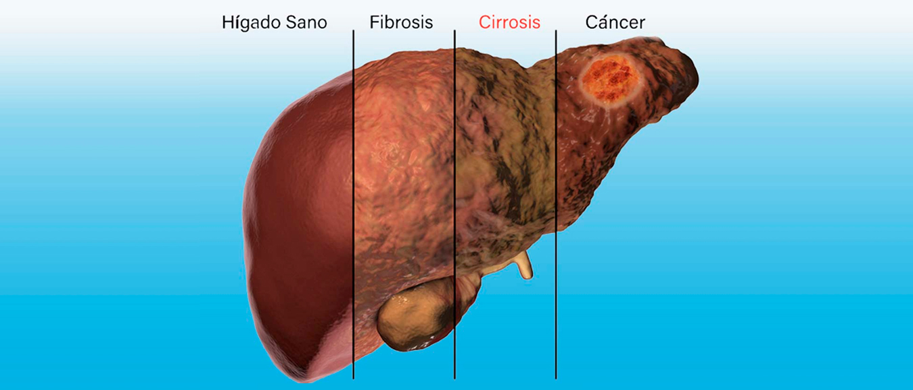

Características del órgano para trasplantes |
| Un trasplante de hígado es un procedimiento quirúrgico para extirpar el hígado que ya no funciona de forma adecuada y remplazarlo por otro sano de un donante vivo o muerto. |
|
|
El hígado es un órgano de color marrón rojizo oscuro con forma de triángulo que pesa alrededor de 1,36 kilogramos. Tiene múltiples funciones. El hígado recibe irrigación sanguínea a través de dos fuentes: La sangre oxigenada fluye hacia el hígado a través de la arteria hepática. |
| Cuando se concentran cantidades anormales de grasa en el hígado o sufre de algpun virus, este adquiere enfermedades, entre ellas la insuficiencia hepática aguda, también conocida como insuficiencia hepática fulminante, puede causar complicaciones graves, entre ellas sangrado y más presión en el cerebro. Se trata de una emergencia médica que requiere hospitalización. |
 |